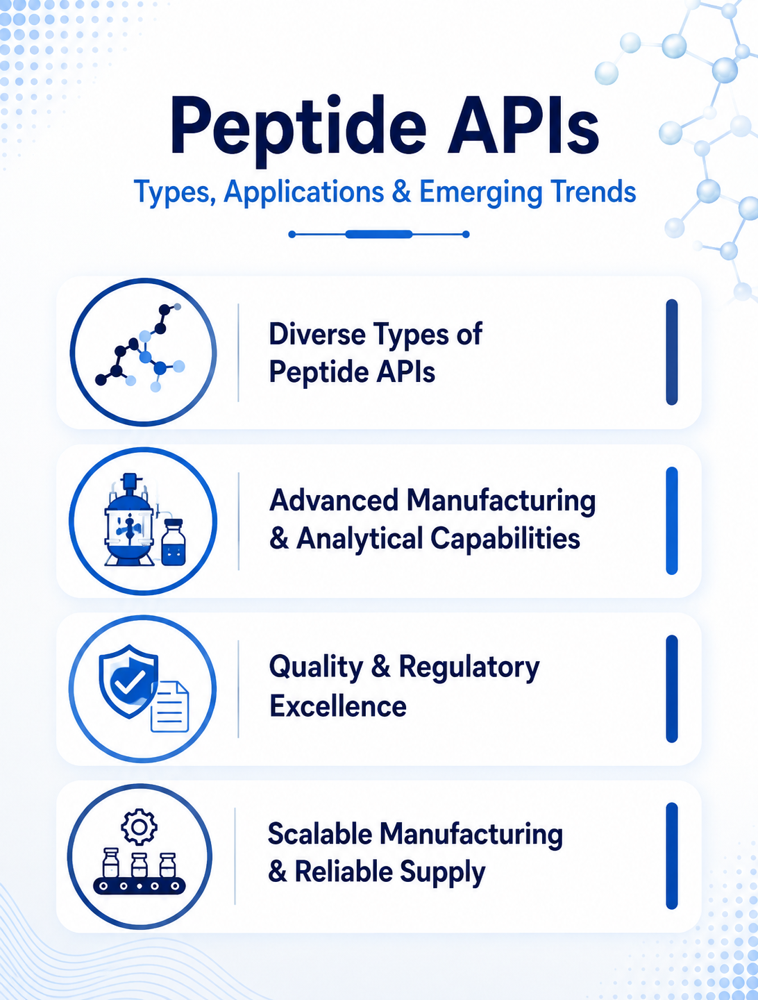

Peptide APIs: Types, Applications & Emerging Trends
13 August 2026

Peptide Active Pharmaceutical Ingredients (APIs) are an important category within the pharmaceutical industry, supporting the development and manufacture of medicines across a growing range of therapeutic applications. Peptide API manufacturers develop and produce peptide-based APIs for pharmaceutical companies, drug developers, and other organizations involved in pharmaceutical manufacturing.
Unlike many conventional small-molecule APIs, peptide APIs consist of amino acid sequences that can vary in length, structure, sequence, and physicochemical characteristics. As pharmaceutical companies expand their peptide-based pipelines, Peptide API Manufacturing is becoming an increasingly specialized area requiring appropriate technical expertise and manufacturing capabilities.
The global landscape of Peptide Manufacturing includes companies with different capabilities in peptide synthesis, purification, scale-up, analytical development, quality control, and regulatory support. Some peptide API manufacturers focus on selected peptide products, while others provide broader peptide manufacturing capabilities or contract development and manufacturing services.
Types of Peptide APIs Receiving Industry Attention
Synthetic Peptide APIs
Synthetic peptide APIs are produced by assembling amino acids into defined peptide sequences using established synthesis approaches. Depending on the molecule, manufacturers may use solid-phase peptide synthesis (SPPS), solution-phase methods, or combinations of different manufacturing approaches.
Therapeutic Peptide APIs
Therapeutic peptide APIs are used in medicines designed to act on specific biological targets. Their applications can span metabolic disorders, endocrine conditions, oncology, cardiovascular diseases, and other therapeutic areas.
Complex Peptide APIs
Some peptide APIs involve longer sequences, challenging synthesis steps, complex impurity profiles, or demanding purification requirements. These characteristics can increase the technical complexity associated with process development and scale-up. Peptide API Manufacturing of complex molecules can require significant process expertise and appropriate infrastructure.
Peptide Intermediates and Building Blocks
Peptide manufacturing can also involve protected amino acids, peptide fragments, intermediates, and other specialized building blocks. These materials can play an important role in the development and production of peptide APIs.
Therapeutic Areas Associated with Peptide APIs
Peptide APIs are associated with a range of pharmaceutical applications. Depending on the specific molecule and mechanism of action, peptide-based medicines may be used in areas such as metabolic disorders, endocrine diseases, diabetes, obesity and weight management, oncology, cardiovascular diseases, gastrointestinal disorders, hormonal and reproductive health, and other specialized therapeutic applications. The therapeutic relevance of a peptide API depends on its biological activity, molecular structure, mechanism of action, and intended pharmaceutical use.
Key Factors to Consider When Selecting a Peptide API Manufacturer
When evaluating peptide API manufacturers, pharmaceutical companies may consider the manufacturer's experience with the relevant peptide class, synthesis technologies, purification capabilities, analytical infrastructure, manufacturing scale, quality systems, and regulatory support.
Key factors may include:
- Peptide synthesis capabilities
- Experience with the relevant peptide class
- Purification technologies
- Scale-up
- Commercial manufacturing capacity
- Analytical characterization capabilities
- Impurity and degradation-product control
- Stability testing
- Quality control systems
- Regulatory Support
- Packaging and storage capabilities
Peptide API Quality and Regulatory Considerations
Quality is a critical consideration in Peptide API Manufacturing because the identity, purity, potency, and other quality attributes of the active ingredient can influence the finished pharmaceutical product.
Peptide API manufacturers may operate under applicable Good Manufacturing Practice (GMP) requirements, while regulatory expectations can differ depending on the intended market and pharmaceutical product.
Depending on the peptide and jurisdiction, regulatory and technical documentation may include specifications, certificates of analysis, stability information, Drug Master Files (DMFs), Certificates of Suitability (CEPs), and other supporting information, where applicable.
Emerging Trends in Peptide API Manufacturing
Growing Interest in Peptide-Based Medicines
The pharmaceutical pipeline continues to include peptide-based products across several therapeutic areas. Increasing development activity can create demand for peptide API manufacturers with specialized synthesis, purification, analytical, and commercial-scale capabilities.
Expansion of Metabolic and Endocrine Applications
Metabolic and endocrine applications represent important areas for peptide-based drug development. Continued pharmaceutical interest in these applications can contribute to demand for peptide APIs and specialized manufacturing capabilities.
Increasing Manufacturing Complexity
As pharmaceutical development expands toward more complex peptide structures, manufacturers may need to address challenges related to synthesis efficiency, impurity control, purification, analytical characterization, and scale-up. Advances in Peptide Manufacturing technologies may help address some of these challenges.
Advances in Peptide Manufacturing Technologies
Innovation in Peptide Manufacturing can involve improvements in synthesis processes, purification technologies, analytical methods, automation, and process control. These developments may help manufacturers improve efficiency, product consistency, and scalability.
Increasing Importance of Quality and Regulatory Documentation
As pharmaceutical companies source peptide APIs for different markets, detailed quality documentation and regulatory information can become important elements of supplier evaluation. Documentation requirements may vary depending on the peptide, finished dosage form, development stage, and intended market.
Strengthening Digital Visibility with Pharma Content Solutions
Pharma Content Solutions helps peptide API manufacturers strengthen their digital presence by developing SEO-optimized content focused on peptide products, therapeutic applications, manufacturing capabilities, and technical expertise.
Through peptide API product pages, SEO content, technical articles, application-focused content, and digital marketing solutions, Pharma Content Solutions helps manufacturers improve their visibility among pharmaceutical companies, drug developers, procurement teams, and other B2B audiences researching peptide APIs and manufacturing partners.
For companies operating in Peptide API Manufacturing, establishing a strong digital presence can help communicate manufacturing capabilities, product portfolios, therapeutic expertise, quality systems, and technical strengths to relevant pharmaceutical audiences.
Let us take care of the content that powers your digital presence, so you can focus on your business.